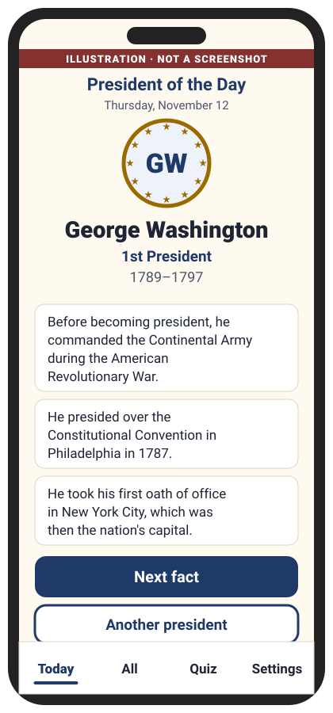

Zyzygy, Inc. · Goldthwaite, Texas
Peggy's Presidents
The User Guide
Enjoyable daily trivia about the presidents of the United States, in big, clear type.
- Free. Nothing to buy, ever.
- No ads. No accounts. No sign-in.
- Collects no information about you.
- Works without the internet.
In development for the App Store and Google Play
For iPhone, iPad and Android phones and tablets. The app is still being built, so the pictures in this guide are placeholders and illustrations, not screenshots.
What's inside
- Welcome
- President of the Day
- Next fact, and browsing all the presidents
- Making the text bigger
- Quizzes (only if you want one)
- No internet needed
- For family members: setting it up
- Questions and answers
- Getting help
Chapter 1Welcome
Thank you for trying Peggy's Presidents. Each day it shows you one president of the United States, with a few short, interesting facts. Nothing to learn and nothing to buy.
Why we made it
This application was inspired by Peggy and her love of historical facts.
What you'll find inside
- A president every day, ready the moment you open the app.
- A few short facts, with more whenever you like, and every president to browse.
- Large text, set once in Settings.
- Three gentle quiz questions a day, only if you want them. No timers.
- Just the facts. No opinions and no politics.
Chapter 2President of the Day

When you open Peggy's Presidents, there's nothing to set up and nothing to choose. It goes straight to the President of the Day, with today's date. You'll see:
- A round badge with his initials, circled by stars. (Portraits may come in a later version.)
- His name, which number president he was, and his years in office: George Washington · 1st President · 1789–1797.
- Three short facts, one or two sentences each.
A new president comes up every day, in order. After the last one, it starts again with different facts first.
Chapter 3Next fact, and browsing all the presidents
Want another fact?
- Tap the big Next fact button.
- A new fact appears under the others. Take your time; nothing disappears.
- When you've seen them all, the app says "That's every fact for today."
Want to meet someone else?
- Tap Another president to see the next president in order.
- Or tap All at the bottom for the whole list, in order, with numbers and years. Tap any name.
- On a president's page, Previous president, Next president and Next fact all work.
- Tap Today at the bottom any time to come back to today's president.
Chapter 4Making the text bigger
Peggy's Presidents has two text sizes: Regular and Large.
- Tap Settings at the bottom right.
- Under Text size, tap Large.
- The words get bigger right away, and the app keeps your choice for next time.
- Tap Today to go back to the President of the Day.
Changed your mind? Do the same thing and tap Regular.
It works together with your phone's own text size. If the phone or tablet is already set to bigger text, Large makes the app bigger still. See "Your phone's own text size" in Chapter 7.
Settings also has an About section: the app's name, a line about why we made it, our privacy promise, and where the facts come from.
Chapter 5Quizzes (only if you want one)
Quizzes are completely optional. You never have to take one, and the app never pops one up on its own. If you'd like to try:
- Tap Quiz at the bottom. You'll see Today's questions: "Three gentle questions, just for fun. Take your time."
- Read the question, for example: "Which president was the first to live in the White House?"
- Tap one of the four big answers.
- The app says "That's right!" or "Good try. The answer is …", with a short fact. (It's John Adams. He moved in during November 1800.)
- Tap Next question. After the third, tap Finish.
There are three new questions every day. Want to go again? Tap Play again, or Back to today.
Chapter 6No internet needed
Once Peggy's Presidents is installed, it works without the internet. All the presidents and facts are already inside the app.
- No Wi-Fi? It still works.
- On a car trip, at the cabin, or on a plane? It still works.
- It doesn't use your data plan.
You only need the internet to download the app the first time, and later to get updates from the App Store or Google Play. Updates can bring new facts and fixes.
Chapter 7 · For family membersHow to set it up for your loved one
Setting Peggy's Presidents up for someone you love takes about five minutes. There's no account to create, no sign-in, no password and no email address needed for the app itself.
1. Install the app
- Open the App Store.
- Tap Search and type Peggy's Presidents.
- Tap Get. The phone may ask for the Apple Account password, Face ID or Touch ID. That's the phone's own check, not ours. The app is free.
- Open the Google Play Store.
- Tap the search bar and type Peggy's Presidents.
- Tap Install. The app is free.
2. Find the app icon
- iPhone or iPad: new apps usually appear on the Home Screen. If you don't see it, swipe left past the last Home Screen page to the App Library, or swipe down on the Home Screen and type Peggy in the search box.
- Android: swipe up from the bottom of the Home screen to see all your apps. Look for Peggy's Presidents, or type Peggy in the search box at the top.
3. Put the icon where it's easy to find
Put it on the first Home Screen, ideally in the bottom row, so it's the first thing your loved one sees.
- If it's only in the App Library: touch and hold the icon, then tap Add to Home Screen.
- To move it: touch and hold an empty spot on the Home Screen until the icons jiggle.
- Drag the icon to where you want it, then tap Done.
- Swipe up from the bottom to see all apps.
- Touch and hold the Peggy's Presidents icon and slide it onto the Home screen.
- Drag it to a good spot and lift your finger.
Exact steps vary a little between phone makers and system versions. If something looks different, your phone's own help pages will have the details.
4. Turn on Large text in the app
- Open Peggy's Presidents.
- Tap Settings at the bottom, then Large under Text size (Chapter 4).
5. Your phone's own text size (optional)
This makes words bigger in many apps on the phone, not just ours.
- iPhone or iPad: open Settings, tap Display & Brightness, tap Text Size, and drag the slider. For even bigger sizes: Settings › Accessibility › Display & Text Size › Larger Text.
- Android: open Settings, search for Font size, and move the slider. (Menu names vary by phone; searching Settings is the easiest way.)
6. A few final touches
- Open the app once together so the first President of the Day is waiting.
- No internet needed after it's installed (Chapter 6). Nothing to keep logged in.
- No accounts, no sign-ins. There's nothing to keep track of and nothing that expires.
- Updates: leaving the phone's automatic app updates on is the easiest way to get new facts and fixes.
- Show the buttons that matter most: Next fact, and Today at the bottom to get back home.
- A conversation starter: on your next call, try "Who did you get today?"
Chapter 8Questions and answers
Is it really free?
Yes. Peggy's Presidents is free to download and free to use. There's nothing to buy inside the app, no subscription and no ads. We're happy to share it.
Does it collect any information?
No. There are no accounts, no ads, and no tracking or analytics, and the app doesn't use the internet at all. The only thing it saves is your Regular or Large choice, on your own phone or tablet. The full privacy policy is at zyzygy.us/peggys-presidents-privacy.
Why doesn't it share opinions about the presidents?
Because it's for everyone. Peggy's Presidents sticks to facts: dates, places, family, and interesting firsts. There are no opinions, no rankings and no commentary, so it's comfortable for every family, whatever their views. Where a fact mentions a political party, it simply says which one, the same way for every president.
Where do the facts come from?
From public-domain data (Wikidata and the congress-legislators project, both free for anyone to use), checked against U.S. government sources such as the National Archives, the Library of Congress, the National Park Service and the U.S. Congress. The sentences are our own plain-English writing. Every fact is checked before it goes into the app. You'll find the credits under Settings › About.
Do I need the internet?
Only to download the app and get updates. Everything else works offline.
Does it need a password or an email address?
No. You just open it.
Will the app send notifications?
No. Peggy's Presidents never sends notifications. The new president is simply waiting each time you open the app.
Can I use it on more than one device?
Yes. Install it on each phone or tablet you like. It's free on each one.
I think a fact is wrong. What should I do?
Please tell us! Email support@zyzygy.us with the president's name and the fact. We'll check it against our sources and fix it in an update if needed.
Does it include every president?
Yes, every president from George Washington onward, 1st to 47th. The facts for each are short, neutral and checked.
Who decides which president comes up today?
The calendar does. The presidents go in order, one a day, and everyone sees the same president on the same date. The new one appears after midnight.
Is there a dark screen option?
The app follows your phone's own light or dark setting.
Chapter 9Getting help
Questions, a fact to check, or just want to say hello? We'd love to hear from you.
support@zyzygy.us
We reply within 2 business days.
Website: zyzygy.us
It helps to tell us your phone or tablet (for example "iPhone" or "Samsung Galaxy tablet") and what happened.
Peggy's Presidents is in development for the App Store and Google Play. Pictures in this guide are placeholders and illustrations. © Zyzygy, Inc., Goldthwaite, Texas.